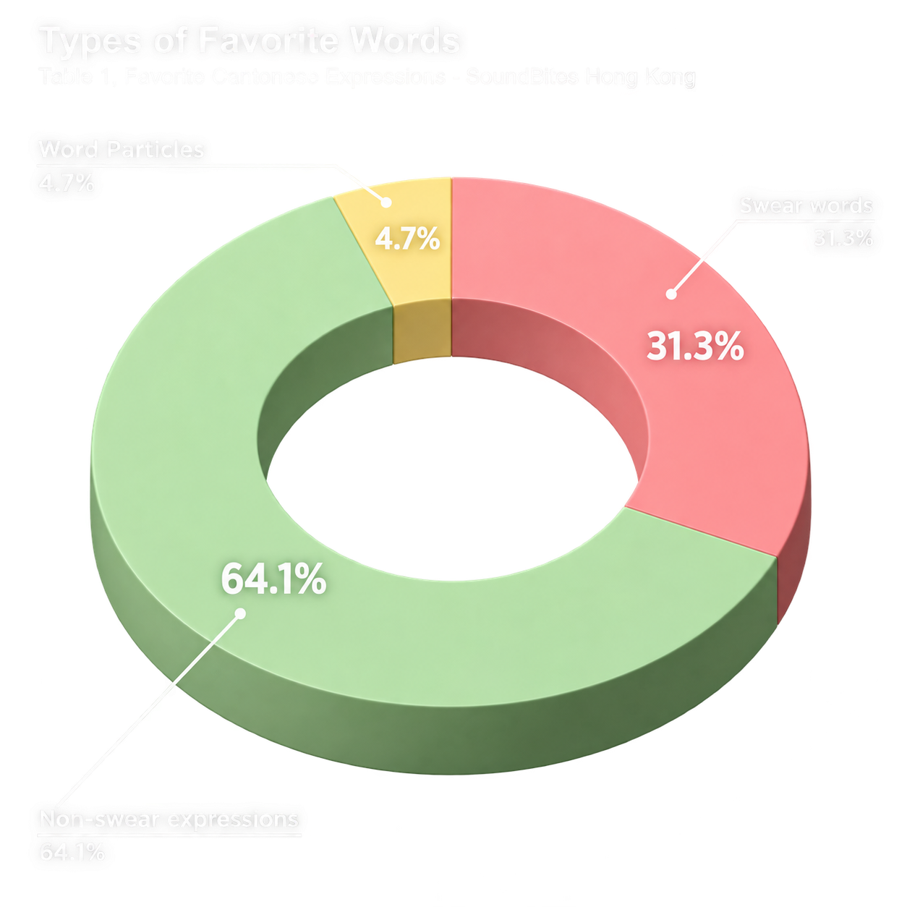
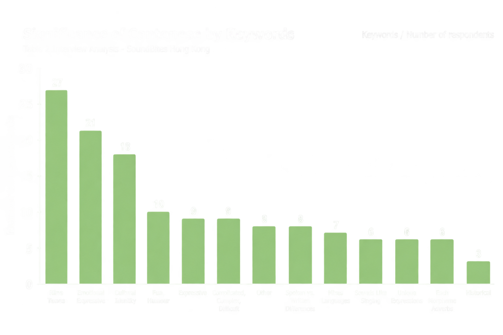

Hong Kong
Community Archive of Favourite Cantonese Expressions
Data Analysis
Archive compiled from 71 respondents. Use the buttons below to sort the list dynamically.

The results from the initial data of participants shows that 31.3% chose swear words as their favorite expression, 64.1% chose other regular expressions, and 4.7% named word particles that adds expressiveness of a sentence as their favorite Cantonese expression.
We asked our participant what the significance of Cantonese is from a linguistic or personal standpoint. We analyzed the results qualitatively and created related keywords from studying their responses. Majority expressed more than one significance.
